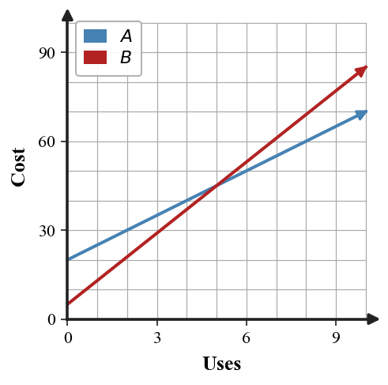

This Extra Practice focuses on Section 4.3: Transformations. Use the current problems to practice how to analyze stretches, reflections, and combined transformations of parent functions, then use the spirals to keep prior skills active.
If $(2,4)$ is on $f$, what point is on $g(x)=2f(x)$?
Decide whether this transformed quadratic opens up or down, then identify a likely vertex.
| $x$ | -1 | 0 | 1 | 2 | 3 |
|---|---|---|---|---|---|
| $y$ | -5 | -1 | 1 | 1 | -1 |
Construct an efficient strategy for determining whether $y=-3|x+2|+1$ and the table below represent the same function without graphing every point.
| $x$ | -4 | -2 | 0 | 1 |
|---|---|---|---|---|
| $y$ | -5 | 1 | -5 | -8 |
Two possible models fit a V-shaped context: $A(x)=2|x-3|+1$ and $B(x)=\frac{1}{2}|x-3|+1$. Recommend one for a situation where output grows quickly away from the target, and justify with table evidence.
Performance notes: Look for correct parameter reasoning, transformed key points, and a clear explanation of why the chosen representation is useful.
A line has slope $5$ and $y$-intercept $-2$. Write the equation.
A context starts at $40$ and decreases by $3$ each step. Identify the slope and initial value.
Two savings accounts are modeled by $A=40+12w$ and $B=100+5w$. Compare the accounts after $0$, $5$, and $10$ weeks.
The graph shows two plans. Estimate where the costs are equal and explain what that point means in the context.

The model $y=5x+10$ and the table are meant to match predicted values. Find the first mismatch, explain how you know, and correct the table.
| $x$ | 0 | 1 | 2 | 3 |
|---|---|---|---|---|
| Predicted $y$ | 10 | 15 | 18 | 25 |
Maya says the slope from $(-4,7)$ to $(2,1)$ is positive because both coordinates “move to the right.” Critique her reasoning and give the correct slope evidence.
Create two linear relationships that have the same value at $x=4$ but different slopes. Provide equations, a small table for each, and a sentence explaining how someone could compare them.
Recommend which representation—table, graph, or equation—best supports deciding when $A=50+6x$ becomes cheaper than $B=20+10x$. Then use that representation to answer the question.
Does $(4,-1)$ satisfy both $x+y=3$ and $y=-x+3$?
Choose the isolated-variable equation, substitute it into the other equation, and solve for the ordered pair.
$$\begin{aligned}x=3y-5\\x+y=7\end{aligned}$$
A school store sells pencils and pens. A student writes $p+n=60$ and $p+2n=95$ without defining variables.
Analyze the structure of the equations and write a precise interpretation for each variable and coefficient so the model makes sense.
Synthesize a complete model for this situation: A theater sold 150 tickets and collected \$1610. Adult tickets cost \$13 and student tickets cost \$9.